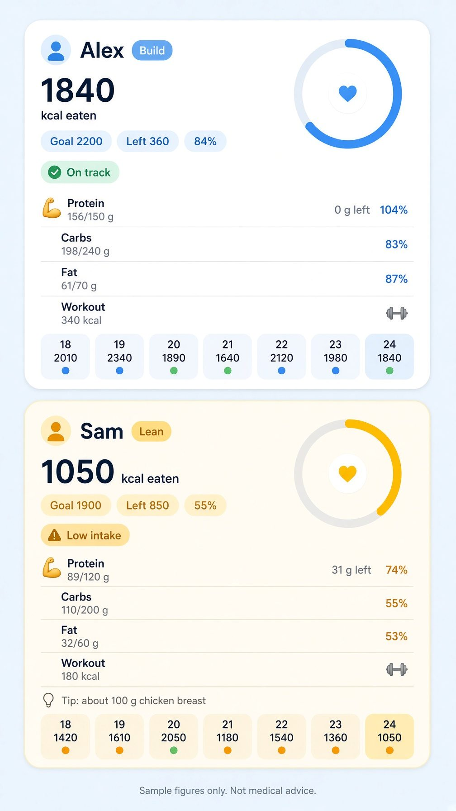
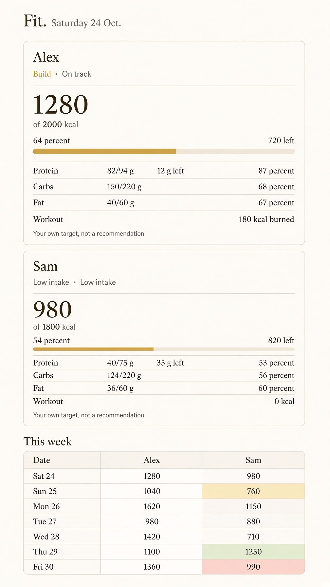
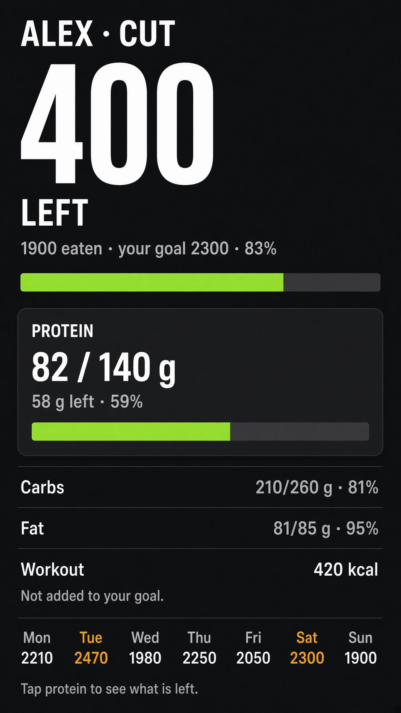
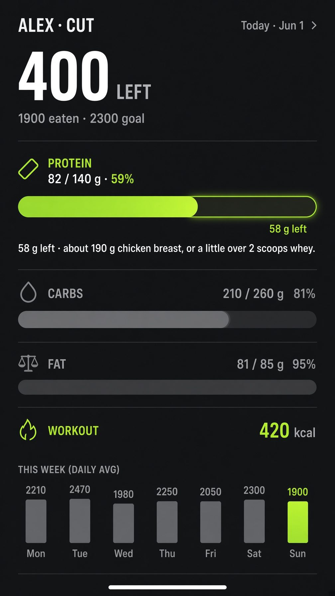

Confirm before we change anything
Pictures only. The live app is unchanged. Some words in the pictures are rough. The real screen would use the labels under each image. Sample numbers, not your goals.
1. Soft, with the missing numbers put back
Protein left and percent, carb and fat percent, the chicken tip, and the week's calorie numbers. Emoji stays a small mark, not a replacement.

2. City, the everyday version
Quiet type. Every number stays on the card. This is the one proposed for the live site.

3. Gym, before a tap
The big number is what is left, not a decoration. Bars show the gap.

4. Gym, after tapping protein
One job: say how many grams are left, and one food that covers them. No shake, no HIT stamp.
